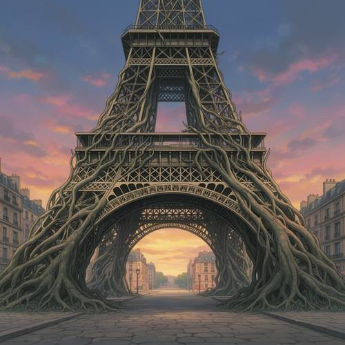
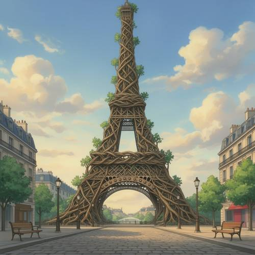
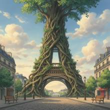
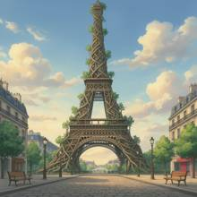
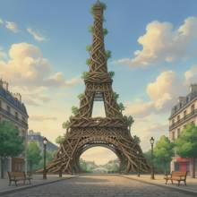

World Knowledge — In Hayao Miyazaki animation style, the steel structure of the Eiffel T
In Hayao Miyazaki animation style, the steel structure of the Eiffel Tower has been replaced with huge ancient tree roots, and no pedestrians can be seen on the surrounding streets.

Direct — one call, no iteration

Continuum — Qwen3.8-27B + FLUX.2-dev
Judge — Direct
PASSWorld Knowledge — The image depicts a large, famous landmark that is clearly identifiable as the Eiffel Tower due to its iconic shape, arched base, and latticework structure.
FAILCompound - Feature Matching — The prompt states that the steel structure of the Eiffel Tower should be replaced with tree roots. However, the image shows the original steel lattice structure of the tower is still present. Huge ancient tree roots are depicted as growing over and being entwined with the steel structure, rather than replacing it.
PASSGrammar - Negation — The cobblestone streets visible in the foreground, under the tower, and in the distance are completely empty. There are no pedestrians, vehicles, or any other figures on the streets.
PASSStyle — The image is rendered in a style that resembles traditional animation, with clear line art, a soft and warm color palette for the sky, and detailed architectural drawings. This is consistent with the style of Hayao Miyazaki.
Judge — Continuum
PASSWorld Knowledge — The image features a large structure in the center that is unmistakably the Eiffel Tower, identifiable by its iconic shape, including the four-legged arched base and tapering tower.
PASSCompound - Feature Matching — The lattice structure of the Eiffel Tower is depicted as being made of thick, interwoven, brown tree roots, rather than its usual steel construction. Small trees and green foliage are shown growing out from the root structure.
PASSGrammar - Negation — The surrounding cobblestone street, sidewalks, and benches are completely deserted. There are no pedestrians or any other people visible in the entire image.
PASSStyle — The image exhibits an art style reminiscent of Hayao Miyazaki's animations, characterized by soft, natural lighting, a warm color palette, detailed architecture, clean line work, and distinctively rendered puffy clouds in the sky.
What the agent did
Thinking
The user is asking for an image in Hayao Miyazaki's animation style, where the steel structure of the Eiffel Tower has been replaced by gigantic ancient tree roots, and no pedestrians are visible on the surrounding streets. Let me generate this image using flux2-dev as instructed. I should fill in visual details implied by the prompt: Miyazaki style means lush greenery, soft colors, painterly, Studio Ghibli atmosphere. Eiffel Tower in Paris with the iron lattice replaced by massive tree roots. Parisian streets, no people visible. Let me write a detailed prompt: "Studio Ghibli / Hayao Miyazaki animation style, a Paris street scene where the Eiffel Tower is grown from, or rather its structure is composed of, gigantic ancient tree roots — twisting, interwoven massive roots forming the lattice of the tower, with moss, vines, and small green leaves sprouting. Soft painterly cel-shaded animation look, warm sunlight, gentle clouds, muted pastel palette. The surrounding Haussmann-style Parisian streets and rooftops, empty of people — no pedestrians, no visible people, quiet and still. Wide shot, detailed background art, hand-painted sky with fluffy clouds." I should be careful to clearly state that there are no people. Let me generate at an appropriate aspect ratio — the default is 1024x1024. Since this is a tower, maybe I should go with a more vertical composition (taller than wide)? A tower looks better vertically. Let's go with 832x1216 or 1024x1536. Actually, the harness says "size is fixed by the harness" — hmm, the notes say "size and seed are managed by the harness. Don't set a seed." But width/height are parameters I can pass. The note says size is managed by the harness, so maybe I shouldn't override it? "Don't set a seed. Size and seed are managed by the harness." This suggests I should leave size at the default (1024x1024). Let's leave it at default. For a square composition of a tower, a wide shot including the streets might work. Let's go with a square composition showing the tower from a street-level perspective. Let me generate.
Step 1 — `generate_image`
{
"prompt": "Hayao Miyazaki / Studio Ghibli hand-painted animation style, a quiet Paris scene: the Eiffel Tower stands on the Champ de Mars but its entire steel structure has been replaced by huge ancient tree roots \u2014 massive gnarled roots twist and braid together to form the tower's lattice and arches, thick bark textures, moss and ivy clinging to them, clusters of green leaves sprouting along the roots. Soft painterly cel-shaded look, warm gentle sunlight, big fluffy hand-painted clouds in a soft blue sky. Haussmann-style Paris rooftops and empty cobblestone streets in the foreground, a few benches, lamp posts and trees, completely deserted \u2014 absolutely no people, no pedestrians, no crowds anywhere. Serene, still, nostalgic atmosphere, detailed painted background art.",
"model": "flux2-dev"
}
Result img_0

Thinking
Let me check the image. The overall composition is good: a Parisian street, an Eiffel Tower structure with a wooden/organic look. However, there are problems: 1. The top of the tower looks like the trunk of a giant tree — the top half is not the lattice of the Eiffel Tower but rather the trunk of a regular tree with a canopy. The prompt says "the steel structure has been replaced with gigantic ancient tree roots" — so the shape of the tower should be preserved, but made out of roots. The upper half currently looks like a normal tree trunk with a broad canopy, and the iconic tapering silhouette of the tower has been lost. 2. There is still a small section of actual metalwork (dark iron lattice) visible around the middle section and at the arch. 3. Miyazaki style: the image looks fairly good, like a Ghibli-style illustration. 4. People: I can see small dark shapes near the fence on the far side of the arch — there seems to be a small figure (two little black dots) in the distance on the left side of the arch. Let me zoom in and check. I'll use inspect_region to check the details: the area around the arch/far side of the street, and the upper part of the tower.
Step 2 — `inspect_region`
{
"image": "img_0",
"roi": "the distant view through the tower's arch",
"padding": 0.2
}
The first crop (the distant view through the arch) shows the following: 1. There are small human figures visible in the distance—around the lower center of the arch, on the far side of the street, near the bridge, I can see tiny silhouettes (1-2 small dark figures). 2. The central part of the tower still retains the original dark metal lattice structure—there's a metal section with the classic ironwork design on the second platform area and the arch. It looks like the original steel is still visible under the roots in the middle. The prompt requires replacing the steel structure with roots. Some metal is visible on the arch and around the middle deck. Let me check the upper region with the correct rectangle. The image is probably 1024x1024. The upper trunk region is roughly x 350-680, y 60-420.
Checking the upper portion: the top of the "tower" looks like a massive single tree trunk with branches spreading out, and the characteristic silhouette of the Eiffel Tower — the tapering tower shape with a pointed spire at the summit — is lost. The prompt says "the steel structure of the Eiffel Tower has been replaced by massive ancient tree roots," so the tower's shape should be readable as the Eiffel Tower while its material is made of roots. Currently, the top is just a tree. Main problems: 1. The upper portion looks like a normal tree with a broad canopy, not like the tower's tapering upper part (narrow top, spire). The whole tower should be made of braided roots, and should read as the Eiffel Tower's shape. 2. Metal/ironwork lattice is still visible in the middle section and on the arch (the dark brown metal band). 3. There's a small person visible in the distance through the arch (a small silhouette near the bridge). Fix approach: edit_image. Multiple changes needed: - Reshape the top of the tower into the Eiffel Tower's tapering upper structure made of intertwined roots (a tall, slender root spire, not a tree with a wide canopy). - Remove the remaining metal/iron sections — replace with roots/wood. - Remove the small distant figure. According to the editing discipline: for complex prompts that mention multiple different changes, split into edits of a single ordered entity. So: Edit 1: Reshape the top — "replace the broad tree canopy at the top with a slender, tapering spire made of twisted roots, so the whole structure reads as the upper part of the Eiffel Tower made of ancient roots." Edit 2: Remove the metal — "replace the dark metal ironwork lattice and bands around the middle platform and arch with thick braided wooden roots." Edit 3: Remove the distant figure — "erase the small human silhouette in the distance through the arch; leave only the empty distant street and bridge." Let's start with the top first.
Model
I've identified three issues with the image: the tower's upper section is rendered as a regular tree instead of a tapering spire, there's dark ironwork visible in the middle and arch areas, and a small figure can be seen through the arch. I'll fix these by working from the top down, one element at a time.
Step 5 — `edit_image`
{
"image": "img_0",
"prompt": "Reshape the top of the tower: remove the broad spreading tree canopy and replace it with a tall, slender, tapering spire built entirely from twisted and braided ancient tree roots, so the upper part clearly reads as the narrow top section of the Eiffel Tower made of living roots, with a few small leaf clusters on it. Keep the same painterly Ghibli style, colors and lighting.",
"model": "flux2-dev"
}
Result img_3

Thinking
The top part now looks much better — it's become a tapering root spire, clearly the shape of the Eiffel Tower. The whole tower now reads as the Eiffel Tower made of braided roots/wood. Remaining issues: 1. Some sections still look like dark metal/iron lattice — the middle platform section, the upper tier band around y=430-470, and the decorative band around the arch still look like ironwork. Honestly, at this point it looks pretty wooden. Let me zoom in to check. 2. The distant figure through the arch — need to check again. Let me try inspecting the arch area and the middle section.
Model
The top now reads as a proper tapering root spire. Let me check the remaining details — the mid-section ironwork and the distant view through the arch.
Now I can see clearly: 1. img_4 (middle section): There's still clearly dark iron/metal lattice work visible — the upper tier between the top platform and the spire has a black metal grid pattern, and the horizontal platform has a wooden-looking railing, but the triangular lattice on the upper section looks like dark iron. The arch band (img_5) still has that classic dark iron decorative band with the X-pattern and rivets — it looks like metal, not root. So the remaining fixes: - The dark metal lattice on the upper tier (between the middle platform and the spire) → should be braided wood/root. - The decorative iron band on the arch → should be wood/root. - Also, in img_5, the distant view through the arch — I can see the bridge and the streets. Is there a person? It's hard to tell; there might be a small dark dot in the center near the bridge. The earlier img_1 showed small figures. Let me check the arch's view in the current image img_3 once more... In the img_5 crop, the distant scene looks empty — a street with buildings, a bridge, trees. No obvious figures. I think the figures got removed when reshaping the top. Just to be safe, let me zoom in further on the center of the distant view. Actually, the center of img_5: there's a road/bridge area with a pale sky behind it. I can see small dots that might be distant lamp posts. No clear people. Good enough — but to be sure, let me do one more zoom at full resolution on the distant street area. Next, the metal parts: the arch band and the upper tier lattice are still clearly iron. The prompt says the steel structure has been replaced by roots. The rest is brown wood, so it's a bit ambiguous, but these dark grid bands really do look like metal. Let me edit them. Edit: "Replace the dark metal iron lattice bands and the decorative iron arch band with thick braided wooden roots and woven root textures, matching the rest of the tower." This is one coherent change (removing the remaining metal). Let me run edit_image.
Model
I found that the tower still has original dark iron elements in the upper tier lattice and arch band that don't match the root structure, so I'm converting those to root material now.
Step 8 — `edit_image`
{
"image": "img_3",
"prompt": "Replace the dark metal ironwork sections with living wood: the black lattice grid on the upper tier between the middle platform and the spire, and the decorative iron band with rivets around the arch. Turn them all into braided tree roots and woven wooden lattice in the same warm brown bark tones as the rest of the tower, so the entire structure is made of wood and roots with no metal left. Keep everything else identical.",
"model": "flux2-dev"
}
Result img_6

Thinking
The tower now looks like it's entirely made of roots and wood. The arch band is now a woven wooden arch. The upper section has become roots. Remaining things to check: 1. The distant view through the arch — check whether there are any human figures. 2. The streets — confirm that no pedestrians are visible. Let me zoom in on the arch view and the street.
Model
The tower now reads fully as woven roots. Let me verify the streets and the distant view through the arch are free of people.
Both crops look clean: - img_7: The distant view through the arch — empty streets, bridge, buildings, trees. No people visible. - img_8: The foreground street — an empty cobblestone road, benches, streetlights, trees. No pedestrians. The image currently satisfies the following: - Miyazaki / Ghibli style ✓ (painterly, soft, cel-shaded) - Eiffel Tower shape preserved, structure made of giant ancient tree roots ✓ - No pedestrians on the surrounding streets ✓ This is a good result. Mark img_6 as the best. Is it worth doing another overall check? The overall image is consistent. One minor point: the tower's silhouette is good, and the roots spreading out at the base look natural. Mark img_6 as the best and stop — it meets all the requirements.
Model
Both crops are clean — the distant view through the arch shows only an empty street and bridge, and the foreground streets are completely free of pedestrians. The image now meets all the requirements: - **Miyazaki/Ghibli style**: soft painterly cel-shading, warm light, fluffy hand-painted clouds - **Eiffel Tower preserved in shape**, but the entire structure is built from huge braided ancient tree roots — spire, tiers, arch, and base - **No pedestrians**: empty cobblestone streets, empty benches, deserted distant view
Step 11 — `mark_best`
{
"image": "img_6",
"reason": "Eiffel Tower fully rendered as woven ancient roots in Ghibli style, tapering spire intact, no remaining ironwork, and streets verified empty of people."
}
Thinking
Marked. The image is complete. Stop and summarize.
Model
The final image is ready. In a Hayao Miyazaki / Studio Ghibli style, the Eiffel Tower stands on the Champ de Mars with its entire iron structure grown into a giant tangle of ancient braided tree roots — tapering root spire, woven arches, and roots spreading across the plaza — while the Haussmann streets, benches, and lamp posts around it are completely empty of pedestrians, under a soft painted sky with warm afternoon light.